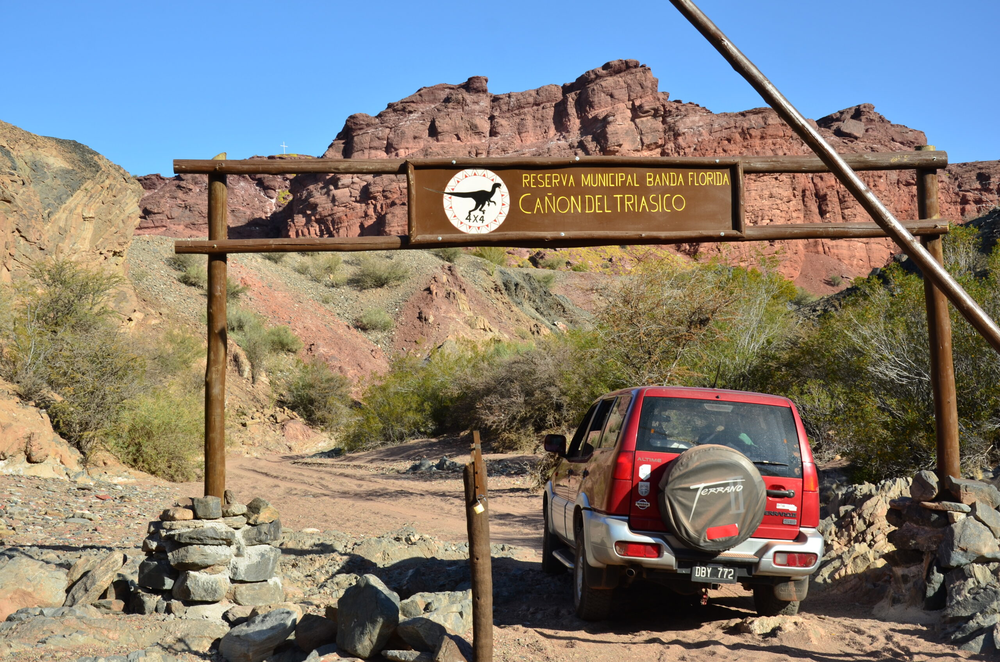

CAÑÓN DEL TRIÁSICO
Un paisaje de formaciones rocosas y colores intensos ubicado en la Reserva Municipal Banda Florida.
El Cañón del Triásico se encuentra en la Reserva Municipal Banda Florida, a pocos kilómetros de Villa Unión. Sus formaciones rocosas y colores intensos permiten descubrir millones de años de historia geológica y paleontológica. La excursión se realiza en vehículos 4x4 y permite conocer diferentes puntos de interpretación del paisaje.
📍 Banda Florida · Excursión 4x4
Ver fotografías.jpeg)